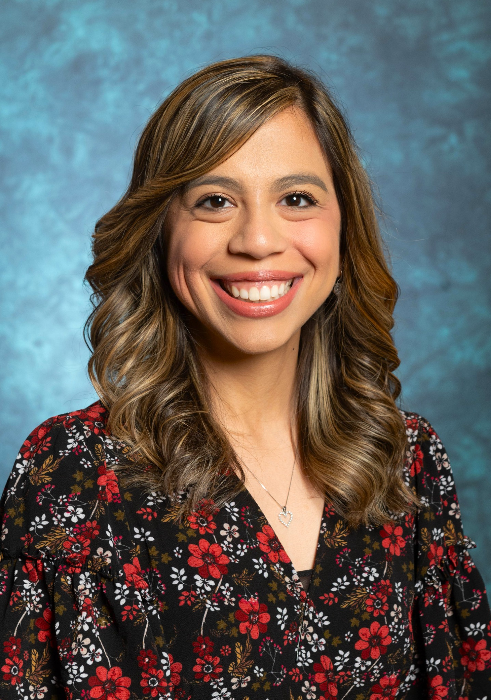

Dr. Alyssa Olivas Vanderlinden
Dr. Vanderlinden's research focuses on clinical gait analysis, lower extremity biomechanics, and stability in children with Autism Spectrum Disorder and older adults. She was born and raised in El Paso, Texas, where she earned a BS in Biology and her PhD in Biomedical Engineering from The University of Texas at El Paso (UTEP). She completed her Postdoctoral Fellowship at Arizona State University.